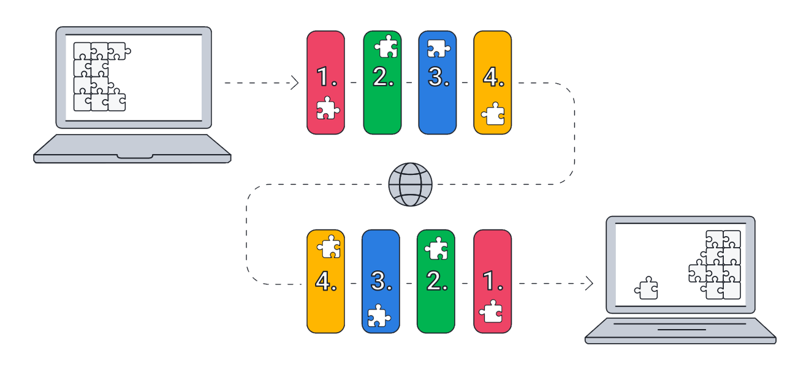

TCP/IP
O Modelo TCP/IP é um conjunto de protocolos de comunicação entre hosts distintos, que garante a qualidade dos dados transmitidos e fornecendo uma boa comunicação entre transmissor e receptor.
Este modelo é composto por 4 camadas independentes que garantem a integridade e a entrega adequada dos dados trafegados do que será executado na camada superior.
